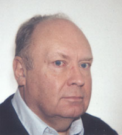

Please note: the AAS Obituaries are temporarily being hosted on this website while their full content is being ingested into the PubPub publishing platform newly adopted by the Bulletin of the American Astronomical Society. When the migration is complete, your existing links will take you to the final, migrated content. Contact peter.williams@aas.org with any questions.
Valentin Boriakoff (1938-1999)
Valentin Boriakoff died of kidney failure on 6 August 1999. Val was a radio astronomer with an extensive background in microelectronics and astrophysics. He conducted very high-resolution radio observations of pulsars to explore the microstructure of their pulse profiles, a research area of special importance for understanding the still-mysterious mechanism of pulsar radio emission. In 1983, a year after the discovery of the first (solitary) millisecond pulsar, Val and his Italian colleagues found PSR 1953+29, the first binary millisecond pulsar, which had a substantial impact on the theory of evolution of neutron stars in binary systems.
More recently, Boriakoff had continued the study of this system to identify the very dim optical companion of the pulsar. He also contributed to the study of interstellar electron-density fluctuations and to the determination of the interstellar magnetic field strength in the directions of galactic pulsars. In addition to the AAS, he was a long-term member of the International Astronomical Union and its Commission on radio astronomy.
Val was born on 8 October 1938 in Argentina and graduated from the University of Buenos Aires in 1963 as an Ingeniero Electromecanico de orientacio Electronica (approximately equivalent to a Master of Science in Electrical Engineering). He served as an electronics engineer at the Argentine Radio Astronomy Institute before immigrating to the United States, where he first worked at the National Radio Astronomy Observatory in Green Bank, West Virginia. In 1967, he entered the graduate program in astronomy at Cornell University, receiving his PhD in 1973 for work with Frank Drake on "Pulsar Radio Frequency Observations with a Digital Pulsar Processor." He became a research associate at the National Astronomy and Ionospheric Center, rising to senior research associate and eventually associate professor in the Department of Electrical Engineering at Cornell.
From 1985 to 1993, Boriakoff also served as an adjunct professor in the Department of Physics and Astronomy at the University of Oklahoma, and he was an associate professor of Electrical and Computer Engineering at Worcester Polytechnic Institute (WPI) from 1988 to 1994. Since 1995 he had been a senior research associate of the National Research Council in the Geophysics Directorate (now Directorate of Space Vehicles) at the Phillips Laboratory of the Air Force Research Laboratory, and at the time of his death he was also adjunct professor of Mechanical Engineering at WPI.
Val retained a life-long interest in astronomy, especially pulsar observations. One of his early papers described an unexpected quasi-periodicity at about a millisecond in PSR 2016+28, and he speculated that this might be due to oscillations of the neutron star, reawakening interest in neutron star oscillation on the part of other astronomers. Val devoted much of his career to further observational studies of pulsar microstructure, quasi-periodicity, mode-switching, emission mechanisms, and effects of the interstellar medium. His broader research interests included planetary science, galactic astronomy, and, more recently, solar physics, geomagnetic activity, and climate change. He brought to all of these sound scientific skepticism and innovative approaches. He was a fount of new ideas and scientific projects that extended far beyond his main scientific interests.
Val Boriakoff was also a man of broad culture and personal charm. His excitement for his science was unmistakable. Those who worked with him came to know the signs of yet another of his creative ideas—the breaking of an engaging smile, the brightening of the twinkle in his eye, the lightning pace of the "if/then/else" thought process that followed, and then his all-engaging question, "Now how can we make this work?"
Val will remain in the hearts of his friends and colleagues as a warm human being with merrily twinkling eyes and a welcoming smile. He is survived by his wife Tamara of Northborough, Massachusetts and two sons, Alexander and Andrei.
Photo courtesy of the National Science Foundation
Obituary written by: Donald Campbell (Cornell University), Herbert Carlson (Air Force Office of Scientific Research), Alexander Muslimov (SM & A Corporation), et al.
BAAS Citation: BAAS, 2000, 32, 1656
SAO/NASA ADS Bibcode: 2000BAAS...32.1656C